L'ISBN non è un database
Perché l'ISBN aiuta a identificare i libri ma non sostituisce i sistemi di metadati, e come funziona la catena di ricerca dei metadati nel progetto Let Books.
Quando prendete in mano un libro stampato, il codice a barre sulla copertina posteriore è l’identificatore più visibile che porta. Quell’identificatore è l’ISBN — International Standard Book Number. Nei cataloghi delle biblioteche, nei negozi online e nei sistemi di metadati, spesso funziona come una chiave di database. Ma un ISBN non è un database, e trattarlo come tale porta a problemi reali nei processi di donazione dei libri.
Cosa è realmente un ISBN
Un ISBN è un identificatore univoco assegnato a una specifica edizione di un libro pubblicato. Lo standard attuale, ISBN-13, utilizza 13 cifre con un carattere di controllo per il rilevamento degli errori. Il formato più vecchio ISBN-10 si trova ancora sui libri pubblicati prima del 2007.
L’ISBN identifica l’edizione, non l’opera. Ad esempio, la seconda e la terza edizione dello stesso libro di testo hanno ISBN diversi. Un libro con copertina rigida e uno con copertina flessibile della stessa opera hanno ISBN diversi. Una traduzione inglese e l’edizione originale francese hanno ISBN diversi.
Questa è una precisione utile — ma comporta importanti limitazioni.

Un ISBN identifica i metadati dell’edizione a sinistra. La copia fisica a destra — condizioni, provenienza, posizione di archiviazione, stato della donazione, foto — è tracciata separatamente nel modello di dominio di Let Books. I due sono correlati ma non sono la stessa cosa.
Cosa l’ISBN non può fare
Non tutti i libri lo hanno
I libri pubblicati prima del 1970, le autopubblicazioni, i materiali accademici a tiratura limitata e i libri di piccoli editori spesso non hanno alcun ISBN. Nelle collezioni di patrimonio accademico — il tipo su cui questo progetto si concentra — i libri di testo precedenti al 1970, gli appunti delle lezioni e i materiali stampati localmente sono comuni e preziosi.
L’ISBN non descrive le condizioni
Una biblioteca vuole sapere se una copia è danneggiata dall’acqua, annotata o se mancano pagine. L’ISBN non fornisce nessuna di queste informazioni. L’identificatore è lo stesso per una copia immacolata e per una che è stata conservata in un seminterrato umido per vent’anni.
L’ISBN non descrive la provenienza
Di chi era questa copia? È stata raccomandata da un professore? Ha la firma di un precedente proprietario o un timbro di biblioteca? Quale istituzione la possedeva? L’ISBN tace su tutto questo.
L’ISBN non descrive l’ubicazione
Per un progetto di donazione di libri, la seconda domanda più importante dopo “cosa è?” è “dove è?”. L’ISBN non ha risposta. L’ubicazione è una questione logistica fisica, tracciata separatamente nella gerarchia di archiviazione.
L’ISBN può essere errato o riutilizzato
Esistono ISBN stampati erroneamente. Lo stesso ISBN può essere accidentalmente riutilizzato da diversi editori. L’OCR può leggere male le cifre. Il carattere di controllo rileva errori di una singola cifra, ma non tutti.
Come Let Books gestisce l’ISBN
docs/book-metadata.md definisce una strategia pratica di fallback per la ricerca basata su ISBN. Il documento indica anche che questo flusso funziona nell’attuale demo alpha e allo stesso tempo funge da modello per la futura applicazione completa:

- Normalizza e convalida l’ISBN. Rimuovi spazi e trattini, porta la X in maiuscolo, convalida il carattere di controllo.
- Interroga prima Open Library tramite la sua API pubblica.
- Se Open Library non restituisce dati utili, interroga l’API di metadati di Let Books.
- Se nessun fornitore ha dati, ricorri all’inserimento manuale.
L’inserimento manuale non viene mai bloccato. Se tutti i fornitori falliscono — sia per un errore di rete, limitazione di velocità o assenza effettiva di dati — l’utente può inserire manualmente titolo, autore, editore e anno e continuare la catalogazione.
La catena di fallback è volutamente semplice. Non esiste un singolo punto di errore perché nessun fornitore è obbligatorio. Ogni fornitore è opzionale e indipendentemente sostituibile.
I riferimenti canonici del repository per questa catena sono docs/book-metadata.md e AGENTS.md. Se una demo o una build specifica dell’applicazione implementa già parte di questo flusso, indicatelo solo come stato di implementazione, non come evidenza principale.
Perché questo è importante per le donazioni di libri
Quando un donatore cataloga una collezione di libri accademici, alcuni avranno un ISBN e altri no. I libri senza ISBN sono spesso i più interessanti — edizioni più vecchie, materiali pubblicati localmente, compilazioni per corsi specifici o libri di editori dell’ex Jugoslavia i cui identificatori non sono mai arrivati nei database globali.
Il processo di catalogazione non deve penalizzare il donatore per la mancanza di ISBN. Ogni funzionalità che funziona con la ricerca ISBN deve funzionare anche senza: tracciamento dell’ubicazione, caricamento di foto, esportazione Excel, revisione in lotti. L’ISBN è una comodità, non un requisito.
Specifica del progetto, AGENTS.md: “Il modello deve consentire dati incompleti. L’ISBN non è obbligatorio.”
Come sarà il futuro
L’attuale catena di fallback crescerà con l’aggiunta di nuovi fornitori. Crossref, Wikidata, OpenAlex e COBISS sono candidati. Ciascuno entrerà nella stessa catena: provare in ordine, fare caching aggressivo, fallire con garbo.
Ma la catena in sé non è l’obiettivo. L’obiettivo è passare da un libro fisico a metadati sufficienti affinché una biblioteca possa decidere se vuole il libro. L’ISBN aiuta, ma il sistema deve funzionare quando l’ISBN non è disponibile.
L’ISBN è un identificatore utile. Non è un database.